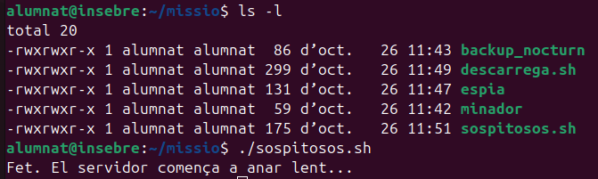
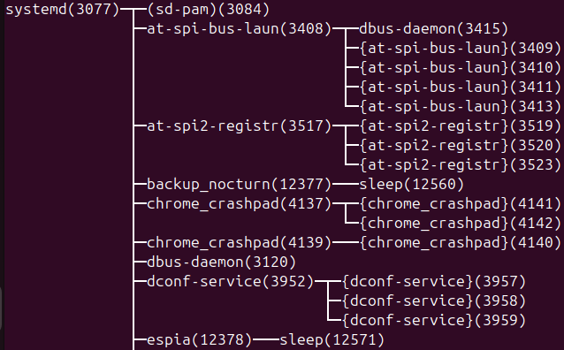
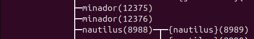
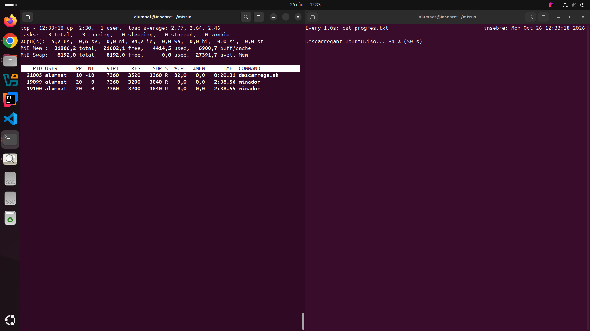
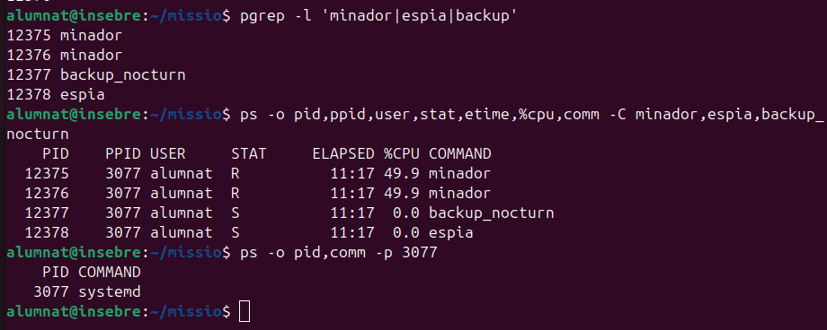
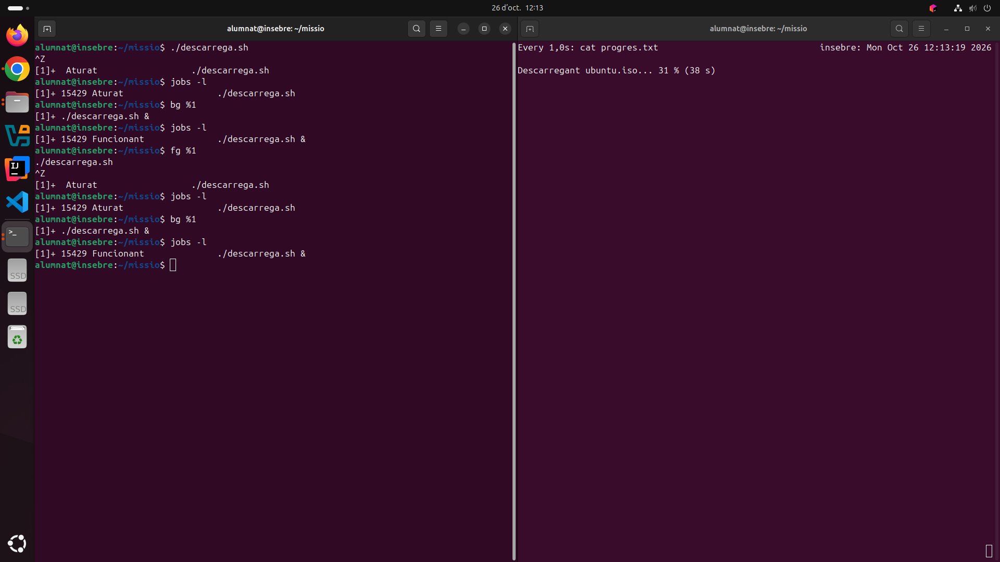
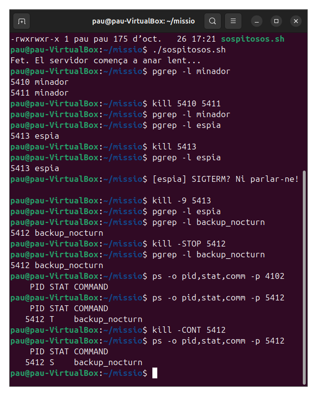
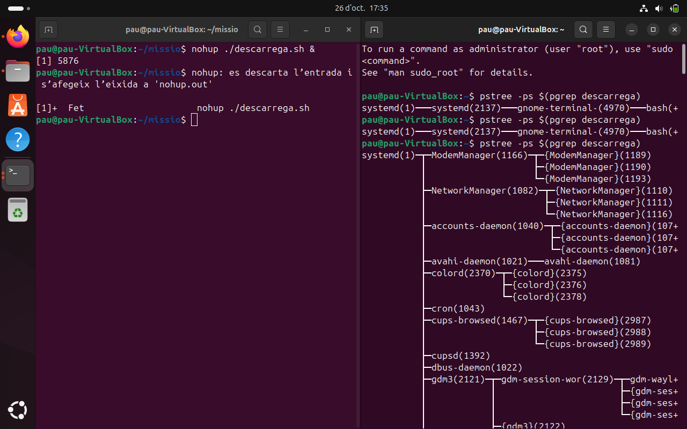

1. Gestio de processos
El primer pas ha estat crear els fitxers de la missió i aplicar els permisos corresponents per a poder executar-los i els executem, veient que funcionen correctament.

Tot seguit, comprovem que funcioni correctament i que s'hagin creat els processos i que estiguin "orfes", depenent de "systemd" en comptes de en "sospitosos".


Com podem veure ara, els processos que es troven a dalt de tot són els minadors, consumint gairebé la meitat d'un nucli cada un.

Tot seguit, com podem veure, els 4 processos, els 2 minadors, espia i backup_nocturn depenen d'un sol pare, de systemd i ho descobrim gràcies al comandament "ps -o pid,ppid,user,stat,etime,%cpu,comm -C minador,espia,backup_nocturn".

Com es pot veure, hem intentat fer els comandaments bg %1, que porta el proces a segon pla, fg %1 que porta el process a primer pla, i jobs -l, que llista les tasques que s'estan duen a terme, com descarrega, en aquest cas.

A continuació, com podem veure, el programa espia no s'ha pogut eliminar amb "kill", però si amb "kill -9". A la vegada, backup_nocturn ha pogut ser pausat i reactivat correctament.

Per a acabar, hem pogut comprovar que el process de Descarrega pot proseguir en segon pla correctament fins a ser complet.

- Actualitzar la llista de paquets disponibles.
- Instal·lar un paquet nou.
- Eliminar un paquet que ja no es fa servir.